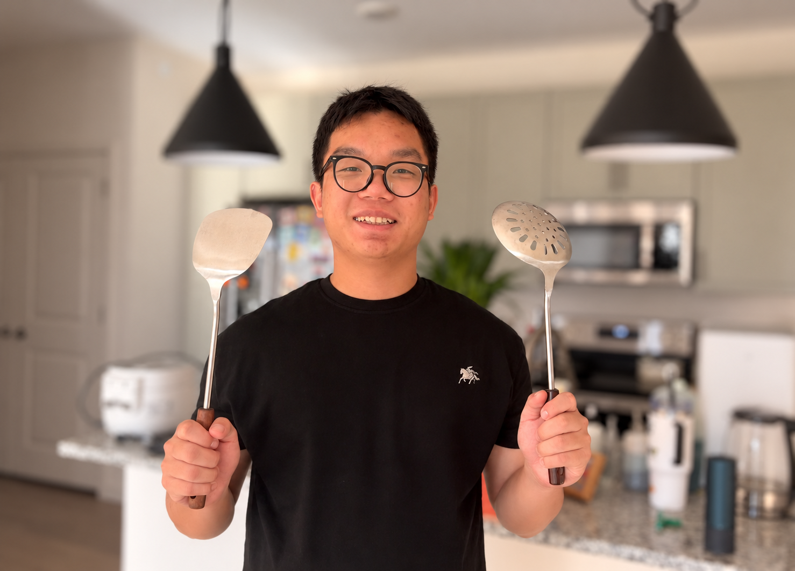

01 / Driving robustnessWACV 2027
When does a camera failure become a driving failure?
Testing how visual corruption changes driving plans—and distinguishing robustness from a model's failure to use its cameras.
DriveDegrade
RESEARCH & CURIOSITY
Autonomy. Robotics.
Efficient AI.
From understanding the world
to moving through it.
I study how autonomous systems perceive, plan, and operate under real-world constraints. My work connects driving robustness, robot exploration, and efficient AI deployment.
Testing how visual corruption changes driving plans—and distinguishing robustness from a model's failure to use its cameras.
Camera-based 3D occupancy on the KR260, combining bounded accelerator computation, measured inference latency, and a watchdog for timely output.
Pheromone-inspired coordination that helps robot swarms explore unknown spaces while reducing congestion and inter-robot contact.

I publish as Haohua Que.
I'm currently a Ph.D. student in Mechanical Engineering at the University of Georgia, working with Handong Yao in the Mobility Lab.
My research connects reliable autonomous driving, robot exploration, and efficient perception on resource-constrained hardware.
University of Georgia2025–present
Ph.D. in Mechanical Engineering · In progressBeijing Forestry University2020–2024
Bachelor's degree in Electronic Information and TechnologyUniversity of Georgia · Mobility Lab
Research on end-to-end autonomous driving, visual planning, and robustness under camera degradation. Participates in TRAVELS and leads the UGA RAV literature-review site.
Tsinghua University · Sense Lab
Led the robotics group for two years. Co-first author of SenseExpo, combining lightweight occupancy prediction, frontier exploration, and ROS integration.
Wiener Tech
Beijing Forestry University · Forest Wolves RoboMaster Team
Contributed to computer vision and mechanical development for the 2022 engineering robot. In 2023, the team joined with Beijing Information Science and Technology University as Sirius.
Beijing Forestry University
IJCNN 2026 · IEEE WCCI 2026
MotiMem.
Edge AI for Robotics Workshop · IROS 2025
Preliminary version of MACE.
RoboMaster University League · Northwest Regional
Team award with the joint Sirius team, as captain of Beijing Forestry University's Forest Wolves team.
RoboMaster University Championship · National Finals
Team award with the joint Sirius team, as captain of Beijing Forestry University's Forest Wolves team.
Accepted
Recommended for presentation
Accepted
No matching papers. Try another keyword or year.